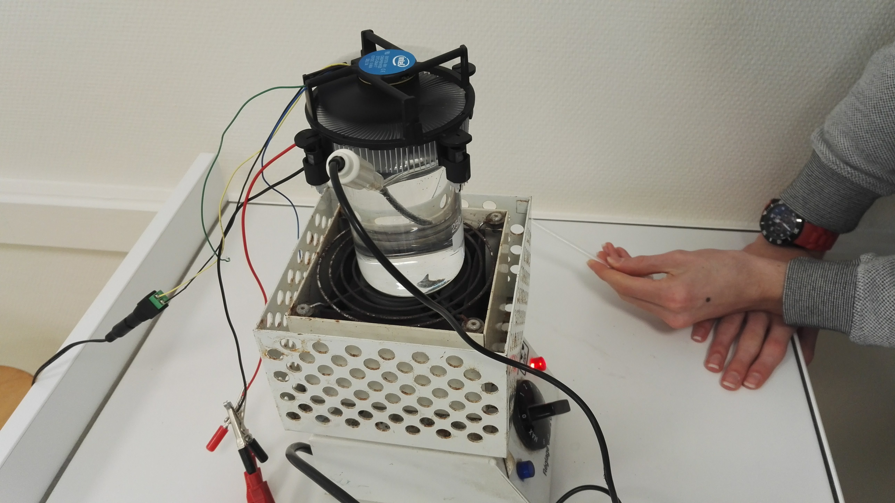
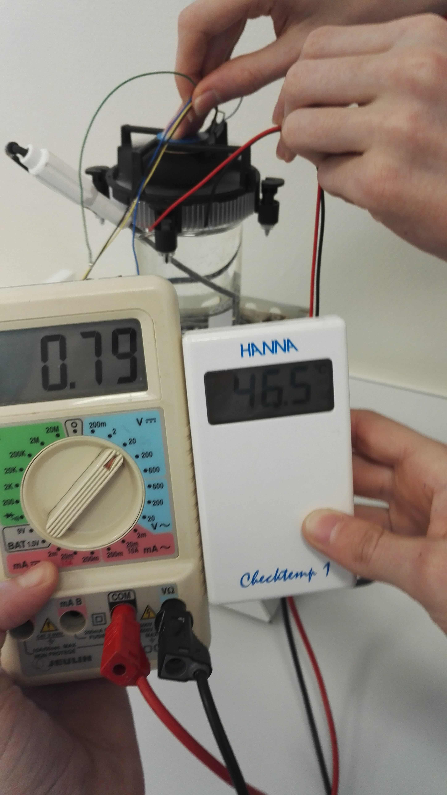
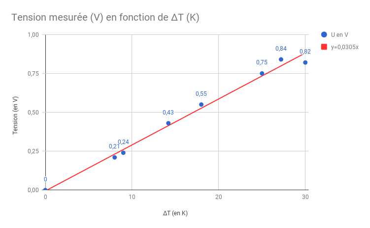
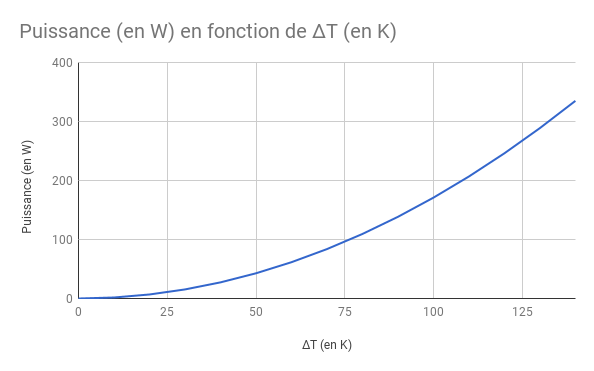

Le module à effet Seebeck permet de produire de l'énergie à partir d'une différence de température entre les deux faces du module. La face exposée à la plus grande température absorbe la chaleur et l'autre la rejète, ce processus génère un peu d'énergie que l'on peut récupérer.
On peut aussi alimenter le module, il absorbera la chaleur d'un coté et la rejetera de l'autre en fonction du sens du courant. Cependant, ce n'est pas ce que l'on cherche à faire ici (on veut récupérer de l'énergie, pas l'utiliser).
Nous allons chercher une fonction qui à toute différence de température ΔT en Kelvin associe une tension U en Volt
Matériel :
x1 Chauffage
x1 Module à effet Seebeck
x1 Un bécher
x1 De l’eau du robinet
x1 Un multimètre
x1 Un dissipateur thermique (puissance max dissipée 65W) => Ventirad de PC
x1 Une résistance de 10Ω
Protocole Expérimental :
On fait chauffer de l’eau dans un bécher jusqu’à une température plus élevée que celle du milieu ambiant. Ensuite on immerge partiellement une face du module Seebeck dans l’eau pour faire chauffer l’une de ses deux faces.
On utilise le dissipateur thermique pour refroidir l’autre face du Seebeck. De cette différence de température naît ainsi un courant électrique. Nous établissons alors un tableau qui, à toute différence de température ΔT, associe la tension
U spécifiée en circuit ouvert. Nous pouvons alors tracer un graphique de ces résultats. Il en résulte une droite passant par l’origine, dont nous pouvons calculer le coefficient directeur appelé coefficient Seebeck. Par la suite, nous pouvons brancher
le module en série avec une résistance de 10Ω, et grâce à la relation U=RxI , en déduire l’intensité parcourant le circuit.
Montage :


Résultats :

Nous allons chercher à calculer la résistance interne du module à effet Seebeck, cela nous aidera à trouver une fonction qui à toute tension U en Volt associe une intensité I en Ampère.
Protocole Expérimental :
Nous refaisons le montage précédent. En ajoutant un ampèremètre en série dans le système ainsi qu’une résistance de 10Ω, nous allons calculer la résistance interne du module à effet Seebeck, ce qui nous permettra de trouver
une fonction qui à toute tension U associe une intensité I. Nous utiliserons la relation U = R x I. Résultats : On sait que R=10+x où x représente la résistance interne du module à effet Seebeck et 10 la résistance déjà présente dans le circuit. De
plus, nous pouvons mesurer l’intensité avec l’ampèremètre et la tension avec le voltmètre. On en déduit les relations suivantes : I = U/R ⇔ I = U/(10+x) ⇔ x=U/I-10 Ensuite, nous relevons la tension aux bornes du module et l’intensité du courant dans
le circuit, on trouve : I = 0,019A et U= 0,36V On en déduit la résistance interne du module à effet Seebeck qui est donc de 8.37Ω. La résistance totale du circuit est donc de 10+8.37 soit 18.37Ω. Comme I=U/R, et que R est constant, nous avons trouvé
la fonction qui à toute tension mesurée au bornes du module à effet Seebeck associe une intensité électrique. Il s'agit de la fonction f(U) = U/18.37
On en déduit alors la fonction qui à tout I et U associe P : f(I,U) = IxU = (1/18.37)xUxU =
U
2/18.37
De plus, on a U = 0.0305ΔT, donc on en déduit f(ΔT) = 18.37(0.0305ΔT)2.
